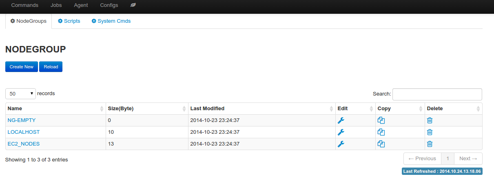
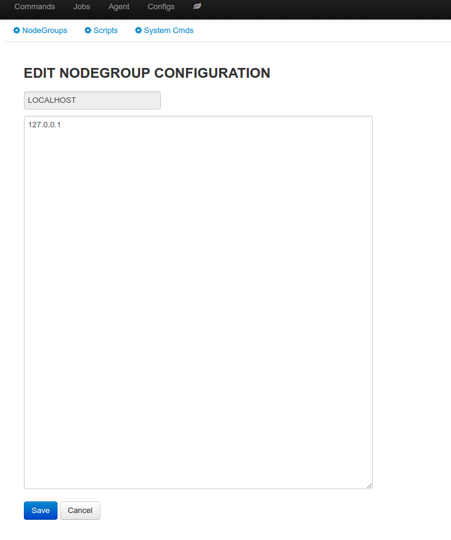

Nodegroup¶
Nodegroup defines a group of nodes with similar characteristics, and similar purpose. For example, a group of nodes that install the same operating system and cronus agent, in the same network, and are running the same application.
Create nodegroup
Nodegroup is uniquely identified by its name, values are line separated hostnames or IPs.
Use nodegroup
- Can be referenced in command wizard when run command job
- Can be referenced in oneclick launch
- Can be referenced in recurring job
nodegroup summary
edit nodegroup
